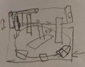
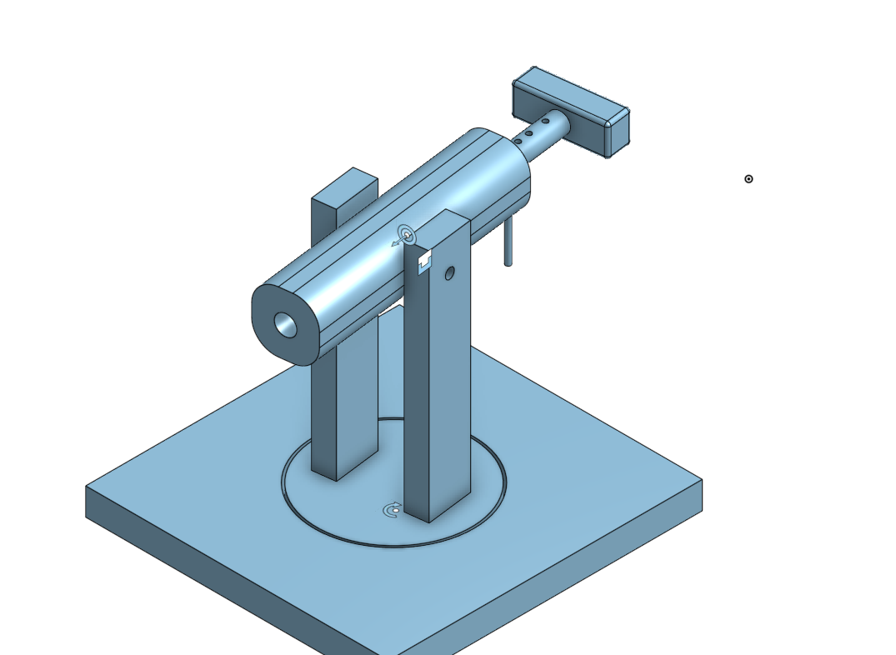

Nerf Dart Project
This is the first part of the summative in which I built a nerf dart launcher that is capable of shooting a nerf dart to 8 ft, and the launcher can adjust for windage and elecation

Brainstorming
At the start of this project, I came up with three ideas in the form of thumbnail sketches, in which I chose one that I thought was the best in the end.
Idea 1

The idea to this example is that it is rather simple, with one key mechanism, a round handle that can be pulled over set positions to set the power.
Idea 2

For this idea, it doesn't have set power but instead had a different handle with a bar for setting elevation.
Idea 3
In this thumbnail, I took general ideas from all the other ones and put it into one, with a set power using holes in the dowel where you can put a pin through. It also has a set elevation and set windage using different techniques. This is the design that I ended up picking
Building the nerf dart launcher
Building, challenge etc
Machines
rizzy rizzards with rizz made my life easier
Materials, Sustainability and Reusing
Tonight on smnn
CAD 3d modeling
I did CADding for this project with onshape and I chose to do this skibidi rizz sigma gyatt ohio in rizzy town sigma rizz
